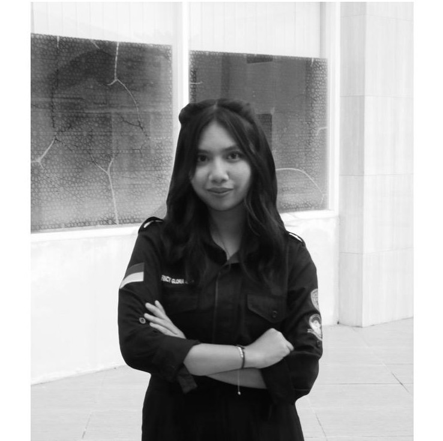

Halo, Saya
Mahasiswa | S1 Informatika

Saya lahir pada 27 Juni 2006 di Kecamatan Muara Wahau, memulai pendidikan saya di bangku Sekolah Dasar Negeri 005 Sangatta Utara Kemudian Sekolah Menengah Pertama Negeri 2 Sangatta Utara, kemudian Sekolah Menengah Atas Negeri 1 Sangatta Selatan
Dan sekarang sedang menempuh jenjang Perguruan Tinggi di Universitas Mulawarman Samarinda Menjalani semester 3 di Fakultas Teknik Program Studi Informatika
Bertanggung jawab dalam membangun dan menjaga komunikasi internal maupun eksternal organisasi, mengelola publikasi, serta mendukung kegiatan branding dan hubungan masyarakat.
Mendukung sekretaris dalam mengelola administrasi, dokumentasi, dan koordinasi kegiatan acara, memastikan semua informasi dan agenda tersusun rapi dan tepat waktu.
Bertanggung jawab merencanakan, mengorganisir, dan melaksanakan berbagai acara, memastikan semua kegiatan berjalan lancar dan sesuai tujuan acara..
niluhfincyglorianathasia@gmail.com
+62 821 5908 7070
Samarinda, Kalimantan Timur, Indonesia